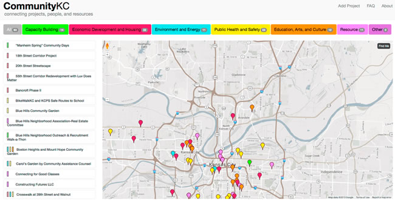

<div class="row">
    <div class="col-md-12">
        <div class="project-issues">
            <h2>Code for KC Right Now!</h2>

            <p>Open GitHub Issues on our projects that need your help.</p>
            <iframe id="widget"
                    src="http://codeforamerica.org/geeks/civicissues/widget?organization_name=Code-for-Kansas-City&number=5"
                    width="100%" height="1100" frameBorder="0"></iframe>
        </div>
        <h1>Who We Are</h1>

        <p class="lead">We’re Kansas City’s chapter of the Code for America Brigade network, a group of civic-minded
            geeks who volunteer our talents to projects that improve how our local governments and community
            organizations use the web. We strive for principles of open data and technology advocacy for civic good and
            are supported by our host organization, <a target="_blank" href="http://www.kcdigitaldrive.org/">KC Digital
                Drive</a>. The
            Brigade is about action, so join us at a Hack
            Night where we’ll commit code to make a difference in our city!</p>
        <!--
                <h1>HackKC Midpoint Roundup</h1>

                <p>Join us August 31, from 6-8pm upstairs in the big room at the Sprint Accelerator for pizza and geeking out as
                    we hear progress reports from teams who participated in HackKC: The National Day of Civic Hacking hackathon
                    this past June.</p>

                <p>We'll also welcome people from the community with ideas for technology projects to come pitch their
                    ideas.</p>
        -->

        <h2>Meet the Teams</h2>
 
        <p class="lead">Since the HackKC hackathon in June, six teams have been working hard at our weekly Hack Night to develop apps
            that citizens of Kansas City will use to enhance the way they interact with their local government and
            communities around them. These teams include:</p>

        <p class="project-list"><b>SafeAssist:</b> is being created to provide a vehicle
            for caregivers and individuals to share pertinent health and behavioral information to help first responders
            process the dynamics of those service calls much more effectively and safely, while increasing the overall
            quality of service. Primary language: PHP/Laravel, <a
                    href="https://github.com/codeforkansascity/Safe-Assist">GitHub</a>,
                <a href="https://codeforkc.slack.com/messages/nd-safe-assist/">Slack</a>
        </p>

        <p class="project-list"><b>KCNeighborhoodStat:</b> brings together civic data from different sources for a specific
            neighborhood in a customizable dashboard. Primary language: Ruby on
            Rails
            <a
                    href="https://github.com/codeforkansascity/Neighborhood-Dashboard">GitHub</a>,
            <a href="https://codeforkc.slack.com/messages/nd-n-hood-dashboard/">Slack</a></p>

        <p class="project-list"><b>Parcel Assessment Tool:</b> a tool that can be used to create more transparency in land ownership, zoning
            and entitlements for specified sites.</p>

        <p class="project-list"><b>Vacant 2 Vibrant</b>UNI and UMKC Law department are currently developing content to create a step-by-step
            process for walking a potential developer through the process of acquiring the vacant property.
            The goal of the site is to make the process easier and more transparent, so more local citizens can develop
            parcels in their neighborhoods.
            <a href="https://github.com/codeforkansascity/Vacant2Vibrant">GitHub</a>,
            <a href="https://codeforkc.slack.com/messages/vacant2vibrant/">Slack</a>
        </p>

        <p class="project-list"><b>CommunityKC:</b> CommunityKC is a website that maps current projects happening in the Kansas City METRO
            Area. This extends beyond neighborhood boundaries and the state line to include ALL of us Primary language:
            PHP/Drupal,
            <a href="https://codeforkc.slack.com/messages/civic-project-mapping/">Slack</a>
        </p>

        <p class="project-list"><b>Project Property Violations</b> - Helping KC Understand Code Violations. <a
                href="https://github.com/codeforkansascity/Property-Violations-Settlement">GitHub</a>,
            <a href="https://codeforkc.slack.com/messages/Property-Violations/">Slack</a>

        </p>

        <br>

        <h1>Delivered Projects</h1>

        <p><a href="http://communitykc.org" target="_blank">CommunityKC Mapping Tool</a></p>

        <p><a href="http://communitykc.org" target="_blank"></a></p>


        <h1 class="index">News</h1>

        <p class="lead">Visit our <a href="{{ site.baseurl }}/past-events.html">past events.</a></p>

        <!--


		-->

        <h1 class="index">Hack With Us</h1>

        <p class="lead">We meet every week on Monday night to hack, socialize and learn. Join us on Meetup for the
            latest info. Upcoming meetings:</p>

        <ul class="lead">
            <li>Dec. 7 - Hack Night - <a target="_blank" href="http://www.meetup.com/KCBrigade/events/gszfjlytqbkb/">RSVP</a>
            </li>
            <li>Dec. 14 - Holiday Party - <a target="_blank" href="http://www.meetup.com/KCBrigade/events/226854537/">RSVP</a>
            </li>
        </ul>

        <p>Follow our activities on our <a href="https://codeforkc.hackpad.com/">Hack Pad</a></p>


        <h1 class="index" style="text-align: center">Thanks to our Sponsors</h1>

        <p style="text-align: center"></p>

        <br class="clear"/>

        <p class="lead">Interested in becoming a sponsor? Contact Aaron at KC Digital Drive:
            adeacon@kcdigitaldrive.org</p>

        <h1 class="index">Stay in Touch</h1>

        <p class="lead">Got a question? Contact Brigade captain Paul Barham at pbarham@codeforamerica.org. Sign up for
            our
            <a target="_blank" href="http://eepurl.com/7gbQP ">mailing list</a> to receive updates.
        </p>


    </div>
</div>
